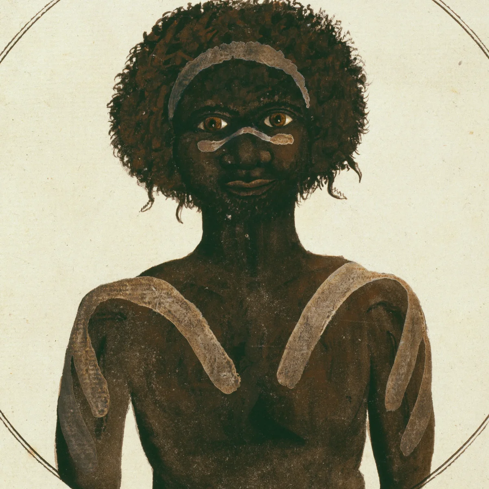

Woollarawarre Bennelong was an Aboriginal Wangal man born in 1764.
The Wangal mob occupied a mangrove area on the southern side of Parramatta River.
They often ate seafood as it was abundant in the areas they lived in.
Bennelong was always resilient, charasmatic and was always a great leader. Until...